The class a player chooses will determine how their journey. There are 3 allignment paths: chaotic, neutral and orderly. certain classes can only be obtained once a certain point is reached in one fo the alignment paths.
The players class will also determine what skills they have and what equipment they will use. There are some skills and equipment that anyone can use while others are exclusive to those who have obtained the proper class.
Gaia has 5 different weapon paths one can go down to choose their class. there are swords, fists, spears, daggers, and tomes. each will offer different skills, combat options, advantages, and disadvantages.
Fist
| Class | Alignment | Description |
|---|---|---|
| 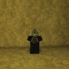 Akuma |
Chaotic | Chaotic super for the fist path. uses moves like leg breaker that debilitate the opponent making them easier to kill. |
| 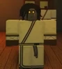 Monk |
Orderly | Orderly super for fist path. Extremely defensive, gaining the ability to provide a shield that bounces enemies away |
| Class | Alignment | Description |
|---|---|---|
Oni |
Chaotic | Chaotic fist progression of akuma. The is class known for its high damage combos sand "boss raiding potential". based off the street fighter character Akuma. |
| 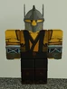 Dragon Sage |
Orderly | Orderly fist progression of Monk. This class has high mobility and mainly uses spells in its kit to combo players. |
Sword
| Class | Alignment | Description |
|---|---|---|
| 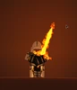 Sigil Knight |
Orderly | Orderly sword progression. can imbue the users blade with special enchantments |
Samurai |
neutral | neutral sword progression. uses a katana; has a longer reach than sword and faster |
| 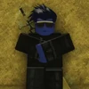 Greatsword |
Chaotic | Chaotic sword progression. user wields a large heavy sword to deal powerful damage and knockback |
| Class | Alignment | Description |
|---|---|---|
| 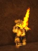 Sigil Knight Commander |
Orderly | Ultra orderly sword class. the wielder is now able to not only heavily buff themselves, but large out huge high dmg buttons |
| 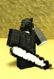 Wraith knight |
Chaotic | Chaotic sword class: gain the ability to inflict dark flames, blocking the opponents ability to charge mana. also gain the ability to use mirrors to teleport |
| 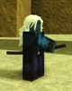 Ronin |
Order | second orderly sword class. user gains the ability to draw their katan instantly, doing moves with extreme damage |
Spear
| Class | Alignment | Description |
|---|---|---|
| 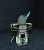 Church Knight |
Chaotic | Chaotic super of spear class. Player can now conjur spears of light and pull enemies hooked by their spear with a chain |
Dragon Knight |
Orderly | Orderly super of spear class. user sacrifices small incrimants of health to deal high damage combos |
| Class | Alignment | Description |
|---|---|---|
| 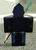 Deep Knight |
Chaotic | Chaotic ultra of spear class. Wielder becomes a monster with high speed regeneration and multiple debuffing moves+ |
| 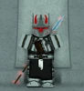 Dragon Slayer |
Orderly | Orderly ultra of spear class. After killing a dragon, the player gains the ability to sprout wings of energy and slam their spear down with thunder |
Dagger
| Class | Alignment | Description |
|---|---|---|
| 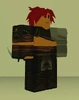 Assasin |
Chaotic | Chaotic super of dagger class. user becomes adept with the use of throwing knives and learns a lethal instant death move |
| 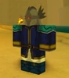 Spy |
Orderly | Orderly super of dagger class. user becomes adept in the skills of stealth, gaining the ability incipacitate enemies non leathaly |
| Class | Alignment | Description |
|---|---|---|
| 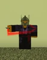 Faceless |
Chaotic | Chaotic alt version of ultra dagger: user gains double the amount of dagger and laces them with poison. user is also capable of piercing a targets hearts. doing a large amount of damage |
| 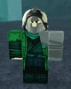 Shinobi |
Chaotic | Chaotic alt version of ultra dagger: user gains a grappling hook and tanto. Inspired by the game: Sekiro shadows die twice |
| 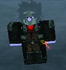 Whisperer |
Orderly | Orderly Ultra class for dagger: User begins using a rapier and gains greater mobility skills through double jump and short range teleports |
Tome
| Class | Alignment | Description |
|---|---|---|
Necromancer |
Chaotic | Chaotic super class for Tome. User uses dead players to create zombie that fight for them. |
Botonist |
Neutral | Neutral super class for Tome. User is able to manipulate nature and create powerful potions with ease |
Illusionist |
Orderly | Orderly super class for Tome. User is adept with creating illusion. they are able to mess with other players movements and vision, while also being adept with barriers |
| Class | Alignment | Description |
|---|---|---|
| 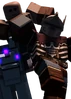 Master Necromancer |
Chaotic | Chaotic ultra class for Tome. User is now able to summon other familiars and steal the life from other players in combat. also gain a cursed blade. |
Druid |
Neutral | Neutral ultra class for Tome. User gains the ability to create and control plant life, manipulating vines and posinous flowers in combat. |
Master Illusionist |
Orderly | Orderly ultra class for Tome. User gains the ability to manipulate the sanity of others. They can also use more advanced form of barriers |